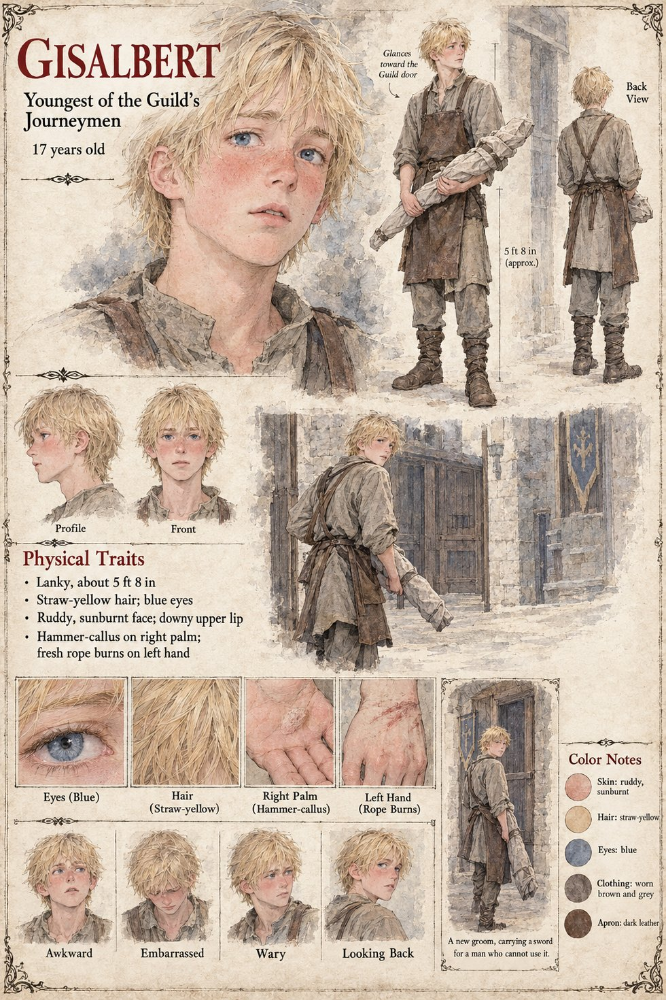

Gisalbert
Youngest of the Guild's journeymen, later groom to the Duke's steward · 17 years old by his sheet
The youngest of the Hammer-Oath Guild's journeymen: seventeen, lanky, straw-haired and sunburnt, with a downy upper lip, the hammer-callus of the trade already on his right palm and fresh rope burns across his left hand. The Guild is the one whose eldest master is Ruodhard, from whose rolls Wolfram is struck, and whose Guildmaster is Gundobad Rotger and whose clerk Sigebert Marl collects its stall-rent in the Low Market. The sheet gives him one line, A new groom, carrying a sword for a man who cannot use it, and one scene: a boy in a leather apron in a stone lane, a long sword wrapped in cloth held in the crook of his arm, glancing back toward the Guild door. Its small caption for the same figure is Glances toward the Guild door.
The publication notes say whose groom he has become: he takes service as a groom to the Duke of Tarnwald's steward, Odilo, and in Chapter 10 is seen carrying a Low Forge sword for a man who cannot use it. They do not name the man, and neither does the sheet. The rope burns on his left hand are a new groom's; the callus on his right palm is the hammer's. Written from the sheet and the character notes in the case's publication-prep file; the manuscript itself was not to hand. His age, his lanky build of about 5 ft 8 in, straw-yellow hair, blue eyes, ruddy sunburnt face, worn brown and grey clothes and dark leather apron are the sheet's own, as are its expression panels, Awkward, Embarrassed, Wary and Looking Back.